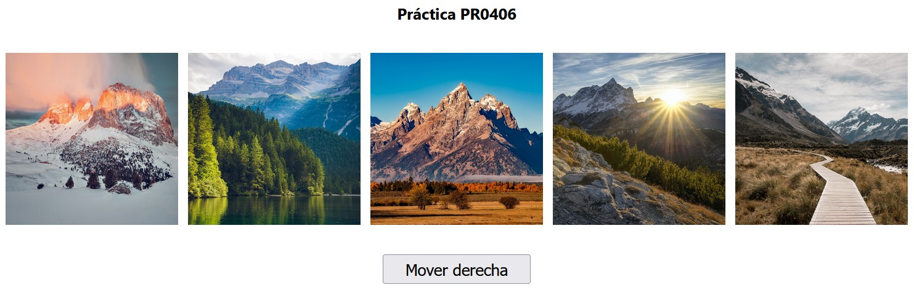

PR0407: Galería de imágenes (I)
En esta práctica parte de una página web como la siguiente:
Realiza los pasos necesarios para que cada vez que el usuario pulse el bóton se desplacen las imágenes una posición a la derecha (la de imagen de la derecha del todo pasará a ser la primera imagen).
Recursos: